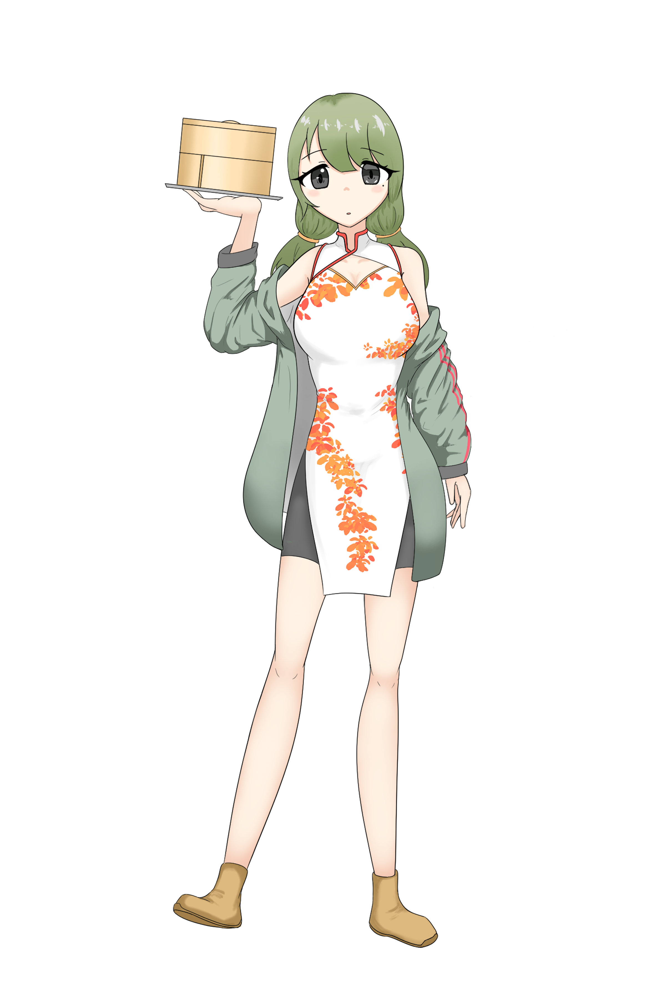

孤立語
SSR
属性：類型論
役割：サポーター
ポジション：中衛
ステータス
| HP | 2000 |
|---|---|
| 攻撃 | 500 |
| 防御 | 300 |
スキル
ノーマルスキル
パッシブスキル
必殺スキル
ノーマルスキル：順番厳守です！
先頭にいる敵1体に対し、自身の攻撃力の320%のダメージを与える。（CT30秒）
パッシブスキル：変わらないカタチ
状態異常抵抗値を43%増加。
必殺スキル：あなたが先、わたしが後
自身よりも前方にいる味方全員の防御力を30%増加、自身より後方にいる味方全員の回復力を40%増加。自身の左右にいる味方の攻撃力を50%増加。
ボイス
| 加入 | |
|---|---|
| 会話1 | |
| 会話2 | |
| 会話3 | |
| 会話4 | |
| 宿舎1 | 順番を守ってくれれば、ひとりでも安心できるんです…… |
| 宿舎2 | |
| 宿舎3 | |
| レベルアップ1 | |
| レベルアップ2 | |
| レベルアップ3 | |
| 覚醒1 | |
| 覚醒2 | |
| 覚醒3 | |
| 編成 | |
| 戦闘開始 | |
| スキル1 | |
| スキル2 | |
| スキル3 | |
| 必殺スキル1 | |
| 必殺スキル2 | |
| 必殺スキル3 | |
| 戦闘勝利 | |
| 戦闘敗北 |
性能解説
味方全体の配置位置に応じたバフを撒くことのできるバッファー。
必殺スキル「あなたが先、わたしが後」は、前衛の防御力、中衛の攻撃力、後衛の回復力を増加させるため、「前衛が敵を抱え、後衛が回復し、中衛が殴る」というこのゲームの基本に忠実なバフ構成となっている。
基本的には中衛に配置してバフをフル活用する運用になるが、バフ自体は自身の配置位置を基準に適用されるため、例えば孤立語を前衛に配置することでタンク役の火力を上げつつ、後方最大6人の回復力を底上げすることで、「殴れて死なない」パーティを組むこともできる。
サポーターの宿命として本人は脆く、火力も心もとないため、「孤立語」とは言うものの、孤立させないような編成を心がけよう。
全体の強みを書く。
まとめを書く。
小ネタ
小ネタを書く